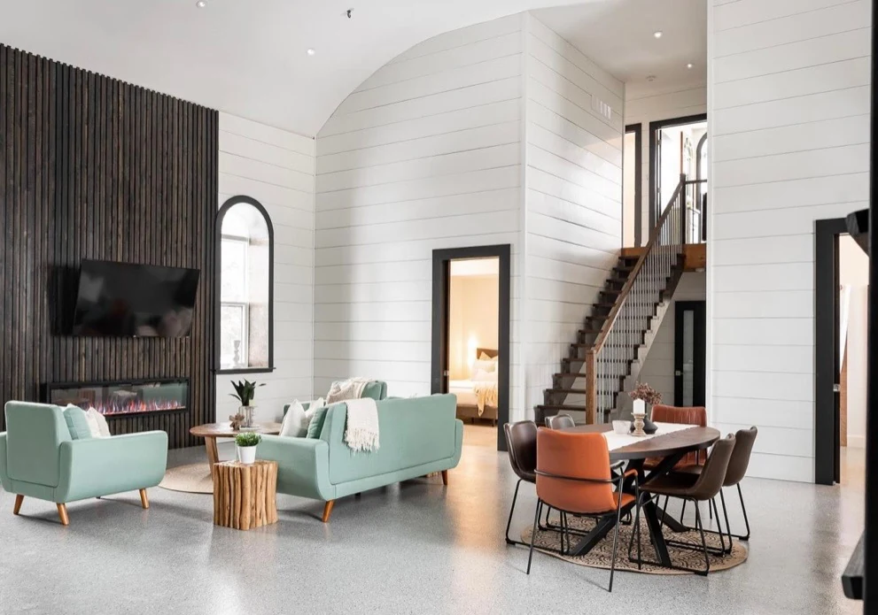
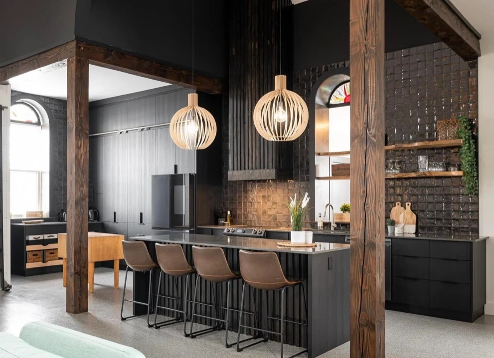

Full church renovation · Interior transformation
The Church Renovation
A comprehensive transformation that honours the building’s original character while introducing refined contemporary design. From the striking kitchen to the thoughtfully restored interior spaces, the project brings together architectural heritage, modern functionality, and meticulous craftsmanship.
Explore Project


